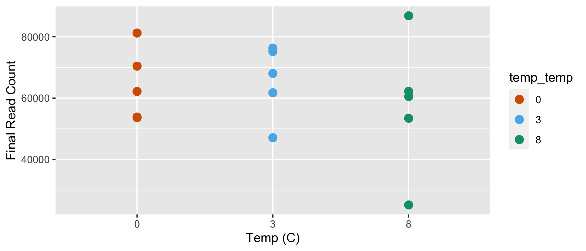
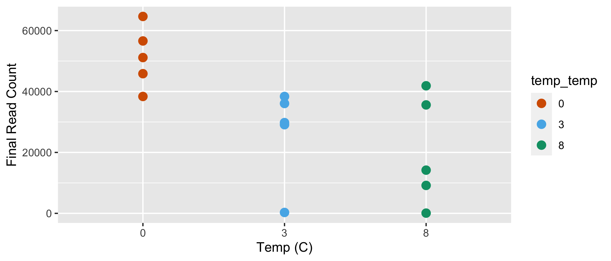

Workflow for preparation of the 2018 16S rRNA and 2018 ITS data sets. These steps are needed before analyzing the data. In this workflow, sample groups are defined, and phyloseq objects are created and curated.
knitr::opts_chunk$set(echo = TRUE, eval = FALSE)
set.seed(119)
#library(conflicted)
#pacman::p_depends(ape, local = TRUE)
#pacman::p_depends_reverse(ape, local = TRUE)
library(phyloseq); packageVersion("phyloseq")[1] '1.34.0'library(Biostrings); packageVersion("Biostrings")[1] '2.58.0'pacman::p_load(tidyverse, DT, microbiome, taxa,
metacoder, ampvis2, ape, statnet.common,
install = FALSE, update = FALSE)
options(scipen=999)
knitr::opts_current$get(c(
"cache",
"cache.path",
"cache.rebuild",
"dependson",
"autodep"
))$cache
[1] 0
$cache.path
[1] "data-prep_cache/html5/"
$cache.rebuild
[1] FALSE
$dependson
NULL
$autodep
[1] FALSEThese workflows share many common variable names so you must split the workflow into a script for each data set OR run the command remove(list = ls()) before beginning the next workflow.
In order to run this workflow, you either need to run the corresponding DADA2 Workflow for 2018 16S rRNA or begin with the output from that workflow, data_prep_ssu18_wf.rdata. See the Data Availability page for complete details.
Unless otherwise noted, we primarily use phyloseq (McMurdie and Holmes 2013) in this section of the workflow to prepare the 2018 16S rRNA data set for community analyses. We prepare the data set by curating samples, removing contaminants, and creating phyloseq objects.
Before we begin, let’s create a summary table containing some basic sample metadata and the read count data from the DADA2 workflow. We need to inspect how total reads changed through the workflow. While we are at it, let’s create more intuitive Sample IDs. For more details on how reads changed at each step of the workflow, see the summary table at the end of the DADA2 section. Table headers are as follows:
| Header | Description |
|---|---|
Sample ID |
the new sample ID based on Plot number, Depth, Treatment, Temperature, & Pair |
Plot |
the experimental plot number |
Depth |
the depth where the sample was collected |
Treatment |
warm or control |
Temp |
temperature of soil heating (0C, +4C, or +8C) |
Pair |
control/treatment coupling |
input |
number of raw reads |
nochim |
final read count after removing chimeras |
Remain |
percent of reads remaining from input to nonchim |
FastqID |
base name of the fastq file |
We can also plot the final read count by the Treatment the sample was subjected to.

Final read count by temperature treatment. Each point represents a different sample.
Load the data packet produced in the final step of the DADA2 workflow. This packet (ssu18_dada2_wf.rdata) contains the ASV-by-sample table and the ASV taxonomy table.
Rename the samples so names have plot and Depth info.
After we load the data packet, we next need to format sample names and define groups.
joined_tab_ro <- joined_tab_percent[order(joined_tab_percent$FastqID), ]
new_names <- joined_tab_ro$`Sample_ID`
load("files/dada2/rdata/ssu18_dada2_wf.rdata")
rownames(seqtab) <- new_names
samples.out <- rownames(seqtab)
sample_name <- substr(samples.out, 1, 999)
plot <- substr(samples.out, 0, 3)
depth <- substr(samples.out, 6, 11)
treatment <- substr(samples.out, 13, 13)
temp <- substr(samples.out, 14, 14)
pair <- substr(samples.out, 15, 15)We have a total of 15 samples, 5 sample pairs, from 10 plots (1 depth). There are 2 treatments corresponding to 3 different temperature regimes.
#define a sample data frame
samdf <- data.frame(SamName = sample_name,
PLOT = plot,
DEPTH = depth,
TREAT = treatment,
TEMP = temp,
PAIR = pair)
rownames(samdf) <- samples.outFor example, P07_D00-010_W4D is the sample heated at +NAC from plot NA and a depth of NAcm. This sample is in group NA along with .
A. The first step is to rename the amplicon sequence variants (ASVs) so the designations are a bit more user friendly. By default, DADA2 names each ASV by its unique sequence so that data can be directly compared across studies (which is great). But this convention can get cumbersome downstream, so we rename the ASVs using a simpler convention—ASV1, ASV2, ASV3, and so on.
# this create the phyloseq object
ps <- phyloseq(otu_table(seqtab, taxa_are_rows = FALSE),
sample_data(samdf), tax_table(tax_silva))
tax_table(ps) <- cbind(tax_table(ps),
rownames(tax_table(ps)))
# adding unique ASV names
taxa_names(ps) <- paste0("ASV", seq(ntaxa(ps)))
tax_table(ps) <- cbind(tax_table(ps),
rownames(tax_table(ps)))[1] "ASV1" "ASV2" "ASV3" "ASV4" "ASV5" "ASV6"So the complete data set contains 20332 ASVs. We can also use the microbiome R package (Lahti, Sudarshan, and others 2017) to get some additional summary data from the phyloseq object.
| Metric | Results |
|---|---|
| Min. number of reads | 25151 |
| Max. number of reads | 86841 |
| Total number of reads | 937761 |
| Average number of reads | 62517 |
| Median number of reads | 62171 |
| Sparsity | 0.898 |
| Any ASVs sum to 1 or less? | FALSE |
| Number of singleton ASVs | NA |
| Percent of ASVs that are singletons | NA |
| Number of sample variables are: | 6 (SamName, PLOT, DEPTH, TREAT, TEMP, PAIR) |
B. Add two final columns containing the ASV sequences and ASV IDs. This will be useful later when trying to export a fasta file. We can also take a look at the phyloseq object.
colnames(tax_table(ps)) <- c("Kingdom", "Phylum", "Class", "Order",
"Family", "Genus", "ASV_SEQ", "ASV_ID")
psphyloseq-class experiment-level object
otu_table() OTU Table: [ 20332 taxa and 15 samples ]
sample_data() Sample Data: [ 15 samples by 6 sample variables ]
tax_table() Taxonomy Table: [ 20332 taxa by 8 taxonomic ranks ]C. Export sequence and taxonomy tables for the unadulterated phyloseq object for later use. We will use the prefix full to indicate that these are the raw outputs.
write.table(tax_table(ps),
"files/data-prep/tables/ssu18_full_tax_table.txt",
sep="\t", quote = FALSE, col.names=NA)
write.table(t(otu_table(ps)),
"files/data-prep/tables/ssu18_full_seq_table.txt",
sep="\t", quote = FALSE, col.names=NA)Let’s see if we have any potential contaminants. We can use some inline R code to see the taxonomy table for any taxa of interest.
Let’s remove these taxa—Eukaryota because we used bacterial/archaeal primers, Mitochondria because those are likely from eukaryotes, and Chloroplast because those are likely from plants. We must do each of these in turn using phyloseq and it gets a little messy.
Why messy? The subset_taxa command removes anything that is NA for the specified taxonomic level or above. For example, lets say you run the subset_taxa command using Family != "Mitochondria". Seems like you should get a phyloseq object with everything except Mitochondria. But actually the command not only gets rid of Mitochondria but everything else that has NA for Family and above. In my experience this is not well documented and I had to dig through the files to figure out what was happening.
Anyway, to remove the taxa we do the following:
ps object of just the taxa of interest,ps object.Remember the original data set contained 20332 ASVs. Here we generate a file with mitochondria ASVs only.
MT1 <- subset_taxa(ps, Family == "Mitochondria")
MT1 <- as(tax_table(MT1), "matrix")
MT1 <- MT1[, 8]
MT1df <- as.factor(MT1)
goodTaxa <- setdiff(taxa_names(ps), MT1df)
ps_no_mito <- prune_taxa(goodTaxa, ps)
ps_no_mitophyloseq-class experiment-level object
otu_table() OTU Table: [ 20291 taxa and 15 samples ]
sample_data() Sample Data: [ 15 samples by 6 sample variables ]
tax_table() Taxonomy Table: [ 20291 taxa by 8 taxonomic ranks ]Looks like this removed 41 Mitochondria ASVs. We will duplicate the code block to remove other groups.
And again with Chloroplast ASVs only.
CH1 <- subset_taxa(ps_no_mito, Order == "Chloroplast")
CH1 <- as(tax_table(CH1), "matrix")
CH1 <- CH1[, 8]
CH1df <- as.factor(CH1)
goodTaxa <- setdiff(taxa_names(ps_no_mito), CH1df)
ps_no_chloro <- prune_taxa(goodTaxa, ps_no_mito)
ps_no_chlorophyloseq-class experiment-level object
otu_table() OTU Table: [ 20274 taxa and 15 samples ]
sample_data() Sample Data: [ 15 samples by 6 sample variables ]
tax_table() Taxonomy Table: [ 20274 taxa by 8 taxonomic ranks ]The code removed an additional 17 Chloroplast ASVs.
And again with Eukaryota ASVs only.
EU1 <- subset_taxa(ps_no_chloro, Kingdom == "Eukaryota")
EU1 <- as(tax_table(EU1), "matrix")
EU1 <- EU1[, 8]
EU1df <- as.factor(EU1)
goodTaxa <- setdiff(taxa_names(ps_no_chloro), EU1df)
ps_no_euk <- prune_taxa(goodTaxa, ps_no_chloro)
ps_no_eukphyloseq-class experiment-level object
otu_table() OTU Table: [ 20223 taxa and 15 samples ]
sample_data() Sample Data: [ 15 samples by 6 sample variables ]
tax_table() Taxonomy Table: [ 20223 taxa by 8 taxonomic ranks ]The code removed an additional 51 Eukaryota ASVs from the ps object.
Here we can just use the straight up subset_taxa command since we do not need to worry about any ranks above Kingdom also being removed.
ps_filt <- subset_taxa(ps_no_euk, !is.na(Kingdom))ps_work_o <- ps_filtThe code eliminated an additional 50 Kingdom level NA ASVs from the phyloseq object.
Phyloseq has an odd way of dealing with taxonomic ranks that have no value—in other words, NA in the tax table. The first thing we are going to do before moving forward is to change all of the NAs to have a value of the next highest classified rank. For example, ASV26 is not classified at the Genus level but is at Family level (Xanthobacteraceae). So we change the Genus name to Family_Xanthobacteraceae. The code for comes from these two posts on the phyloseq GitHub, both by MSMortensen: issue #850 and issue #990.
One thing this code does is reassign the functions
classandorderto taxonomic ranks. This can cause issues if you need these functions.
So you need to run something like this rm(class, order, phylum, kingdom) at the end of the code to remove these as variables. For now, I have not come up with a better solution.
tax.clean <- data.frame(tax_table(ps_filt))
for (i in 1:6){ tax.clean[,i] <- as.character(tax.clean[,i])}
tax.clean[is.na(tax.clean)] <- ""
for (i in 1:nrow(tax.clean)){
if (tax.clean[i,2] == ""){
kingdom <- base::paste("k_", tax.clean[i,1], sep = "")
tax.clean[i, 2:6] <- kingdom
} else if (tax.clean[i,3] == ""){
phylum <- base::paste("p_", tax.clean[i,2], sep = "")
tax.clean[i, 3:6] <- phylum
} else if (tax.clean[i,4] == ""){
class <- base::paste("c_", tax.clean[i,3], sep = "")
tax.clean[i, 4:6] <- class
} else if (tax.clean[i,5] == ""){
order <- base::paste("o_", tax.clean[i,4], sep = "")
tax.clean[i, 5:6] <- order
} else if (tax.clean[i,6] == ""){
tax.clean$Genus[i] <- base::paste("f",tax.clean$Family[i], sep = "_")
}
}
tax_table(ps_filt) <- as.matrix(tax.clean)
rank_names(ps_filt)
rm(class, order, phylum, kingdom)Still the same ranks. That’s good. What about the new groups? Let’s take a peak at some families.
head(get_taxa_unique(ps_filt, "Family"), 16) [1] "Planococcaceae" "Chthoniobacteraceae"
[3] "Nitrososphaeraceae" "p_RCP2-54"
[5] "o_Rokubacteriales" "Methyloligellaceae"
[7] "Nitrospiraceae" "Xanthobacteraceae"
[9] "o_Vicinamibacterales" "Vicinamibacteraceae"
[11] "c_Subgroup_5" "Xiphinematobacteraceae"
[13] "Entotheonellaceae" "Chitinophagaceae"
[15] "Nitrosomonadaceae" "o_Acidobacteriales" Nice. Bye-bye NA
Note. The original code mentioned above is written for data sets that have species-level designations.
Since this data set does not contain species, I modified the code to stop at the genus level. If your data set has species, my modifications will not work for you.
Finally, we rename the ps object. This is now our working data set.
ps_work <- ps_filtOne final task is to add a phylogenetic tree to the phyloseq object.
ps_work_tree <- rtree(ntaxa(ps_work), rooted = TRUE,
tip.label = taxa_names(ps_work))
ps_work <- merge_phyloseq(ps_work,
sample_data,
ps_work_tree)
ps_work_o_tree <- rtree(ntaxa(ps_work_o), rooted = TRUE,
tip.label = taxa_names(ps_work_o))
ps_work_o <- merge_phyloseq(ps_work_o,
sample_data,
ps_work_o_tree)Later in the workflow, we will generate an ampvis2 object from the working phyloseq object, but first we need to fix the OTU table from the phyloseq object. For some reason, values in otu table are int but need to be dbl or else ampvis2 will not work properly.
otu <- data.frame(t(otu_table(ps_work)))
otu[] <- lapply(otu, as.numeric)
otu <- as.matrix(otu)
tax <- as.matrix(data.frame(tax_table(ps_work)))
samples <- data.frame(sample_data(ps_work))
ps_amp <- merge_phyloseq(otu_table(otu, taxa_are_rows = TRUE),
tax_table(tax, tax),
sample_data(samples))Now that we have removed the NC and sample with zero reads, we can summarize the data set so far. Let’s start with the in our working phyloseq object using the summarize_phyloseq from the microbiome R package (Lahti, Sudarshan, and others 2017) as we did above.
| Metric | Results |
|---|---|
| Min. number of reads | 25088 |
| Max. number of reads | 86600 |
| Total number of reads | 936640 |
| Average number of reads | 62443 |
| Median number of reads | 62117 |
| Sparsity | 0.891 |
| Any ASVs sum to 1 or less? | FALSE |
| Number of singleton ASVs | NA |
| Percent of ASVs that are singletons | NA |
| Number of sample variables are: | 6 (SamName, PLOT, DEPTH, TREAT, TEMP, PAIR) |
We can also generate a summary table of total reads & ASVs for each sample. You can sort the table, download a copy, or filter by search term. Here is the code to generate the data for the table. First, we create data frames that hold total reads and ASVs for each sample.
total_reads <- sample_sums(ps_work)
total_reads <- as.data.frame(total_reads, make.names = TRUE)
total_reads <- total_reads %>% rownames_to_column("Sample_ID")
total_asvs <- estimate_richness(ps_work,
measures = "Observed")
total_asvs <- total_asvs %>% rownames_to_column("Sample_ID")
total_asvs$Sample_ID <- gsub('\\.', '-', total_asvs$Sample_ID)And then we merge these two data frames with the sample data frame.
sam_details <- samdf
rownames(sam_details) <- NULL
colnames(sam_details) <- c("Sample_ID", "Plot", "Depth",
"Treatment", "Temp", "Pair")
joined_percent <- joined_tab_percent
joined_percent[, 2:6] <- NULL
merge_tab <- dplyr::left_join(sam_details, total_reads) %>%
left_join(., joined_percent)
percent_change2 <- 100*(1-(merge_tab$total_reads/merge_tab$nochim)) %>%
round(digits = 3)
merge_tab[11] <- NULL
merge_tab$Change <- as.numeric(sprintf("%.3f", percent_change2))
merge_tab2 <- dplyr::left_join(merge_tab, total_asvs, by = "Sample_ID")
merge_tab2 <- merge_tab2[, c(1:7,11,12)]
merge_tab2$coverage = cut(merge_tab2$total_reads,
c(0, 5000, 25000, 100000, 200000),
labels = c(
"low (< 5k)", "medium (5-25k)",
"high (25-100k)", "extra_high (> 100k)"))
colnames(merge_tab2) <- c("sample_id", "PLOT", "DEPTH",
"TREAT", "TEMP", "PAIR",
"final_reads", "reads_lost", "total_asvs", "coverage")We have phyloseq objects but we also want to make taxmap objects so we can use the metacoder (Foster, Sharpton, and Grünwald 2017) and taxa packages. We will jump back and forth between between different tools and packages because each has functionality not available in the others. That said, each package also requires a specially formatted object to work with.
Confused? I was too until I realized that a phyloseq object contains only three type of tables: an otu_table, a sample_data, and a tax_table1. So any time you want to manipulate your data—say look at relative ASV abundance—you need a new phyloseq object. A taxmap object on the other hand can contain many different types of data tables, and as such, is generally more flexible.
First, we can take a look at the phyloseq object generated during the previous workflow.
ps_workphyloseq-class experiment-level object
otu_table() OTU Table: [ 20173 taxa and 15 samples ]
sample_data() Sample Data: [ 15 samples by 6 sample variables ]
tax_table() Taxonomy Table: [ 20173 taxa by 8 taxonomic ranks ]
phy_tree() Phylogenetic Tree: [ 20173 tips and 20172 internal nodes ]In order to use the taxa package, we need to have our data in a specific format. Metacoder has a command called parse_phyloseq, which should do the work for us, but I was unable to get this to work for our phyloseq object. Instead, we generate the necessary tables directly from the phyloseq object and then create a basic taxmap object. I apologize for the circuitous route, but at least it is relatively simple. We need the a) taxonomy table, b) ASV table, and c) sample metadata table. We will first create the tables and then save a local copy.
tax_tab <- as.data.frame(tax_table(ps_work))
tax_tab <- tibble::rownames_to_column(tax_tab, "asv_id")
tax_tab$ASV_SEQ <- NULL
colnames(tax_tab)[colnames(tax_tab) == "ASV_ID"] <- "ASV"
write.table(tax_tab, "files/data-prep/tables/ssu18_tax_tab_mc.txt",
quote = FALSE, sep = "\t", row.names = FALSE)asv_tab <- as.data.frame(otu_table(ps_work))
# this orders in decending fashion
asv_tab <- asv_tab[ statnet.common::order(row.names(asv_tab)), ]
asv_tab <- as.data.frame(t(asv_tab))
asv_tab <- tibble::rownames_to_column(asv_tab, "asv_id")
write.table(asv_tab, "files/data-prep/tables/ssu18_asv_tab_mc.txt",
quote = FALSE, sep = "\t", row.names = FALSE)sam_tab <- merge_tab2
sam_tab[,8] <- NULL
sam_tab <- sam_tab %>% dplyr::rename("total_reads" = "final_reads")
# this orders in decending fashion
sam_tab <- sam_tab[statnet.common::order(sam_tab$sample_id), ]
write.table(sam_tab, "files/data-prep/tables/ssu18_sam_tab_mc.txt",
quote = FALSE, sep = "\t", row.names = FALSE)Now that we have a local copy of each table (tax_tab, asv_tab, & sam_tab), we can read those tables back in using the readr package. Why are we doing it this way instead of just setting each table to a variable? Great question. We do it this way because readr returns tibbles instead of data frames. Metacoder/taxa works best when the data is in tibble format. Instead of writing and reading the tables, you could use the command tibble(), which would convert the data frame to a tibble.
asv_data_i <- read_tsv("files/data-prep/tables/ssu18_asv_tab_mc.txt")
str(asv_data_i)
tax_data <- read_tsv("files/data-prep/tables/ssu18_tax_tab_mc.txt")
str(tax_data)
samp_data <- read_tsv("files/data-prep/tables/ssu18_sam_tab_mc.txt",
col_types = "ccccccddc")
str(samp_data)
asv_data <- left_join(asv_data_i, tax_data,
by = c("asv_id" = "asv_id"))
str(asv_data)
write_csv(asv_data, "files/data-prep/tables/ssu18_asv_tax_tab.csv")
write_csv(samp_data, "files/data-prep/tables/ssu18_sam_tab_mc.csv")With all the data in hand that we need, time to create a taxmap object.
obj <- parse_tax_data(asv_data,
class_cols = 17:23,
named_by_rank = TRUE,
include_tax_data = TRUE) # makes `taxon_ranks()` work
names(obj$data) <- "asv_counts"The last task is to create an ampvis2 object so we can use the ampvis2 (Andersen et al. 2018) R package for some of the analyses and visualizations. An ampvis2 object is similar in structure to a phyloseq object except that you need to provide a combined ASV/taxonomy table. To create the object we use the modified phyloseq object, ps_amp.
Start by generating and modifying dataframes from the tables in the phyloseq object. Ampvis2 requires the column header “OTU” instead of “ASV” or any other name.
amp_meta_1 <- sam_tabamp_asv <- data.frame(otu_table(ps_amp))
amp_asv <- amp_asv %>% tibble::rownames_to_column("OTU")amp_tax <- data.frame(tax_table(ps_amp))
amp_tax <- amp_tax %>% tibble::rownames_to_column("OTU")
amp_tax$ASV_SEQ <- NULL
colnames(amp_tax)[colnames(amp_tax) == "ASV_ID"] <- "Species"Here, rows must be OTUs (ASVs) and the last 7 columns must be taxonomic lineage.
amp_asv_tax <- left_join(amp_asv, amp_tax, by = "OTU")amp_data <- amp_load(amp_asv_tax, metadata = amp_meta_1, tree = ps_work_tree)You can now access the different parts of the ampvis2 object using amp_data$abund for the ASV table, amp_data$tax for the taxonomy table, and amp_data$metadata for the sample data.
We have a few different options to play with. At this point it is difficult to say which we will use or whether additional objects need to be created. Here is a summary of the objects we have.
The phyloseq object before changing NA ranks.
ps_work_ophyloseq-class experiment-level object
otu_table() OTU Table: [ 20173 taxa and 15 samples ]
sample_data() Sample Data: [ 15 samples by 6 sample variables ]
tax_table() Taxonomy Table: [ 20173 taxa by 8 taxonomic ranks ]
phy_tree() Phylogenetic Tree: [ 20173 tips and 20172 internal nodes ]head(get_taxa_unique(ps_work_o, "Family"), 16) [1] "A4b" "Burkholderiaceae"
[3] "Peptococcaceae" NA
[5] "Polyangiaceae" "Pedosphaeraceae"
[7] "AKYH767" "Micromonosporaceae"
[9] "Acidobacteriaceae_(Subgroup_1)" "Pyrinomonadaceae"
[11] "Clostridiaceae" "Myxococcaceae"
[13] "Hyphomonadaceae" "Roseiflexaceae"
[15] "type_III" "Ktedonobacteraceae" The phyloseq object after changing NA ranks.
ps_workphyloseq-class experiment-level object
otu_table() OTU Table: [ 20173 taxa and 15 samples ]
sample_data() Sample Data: [ 15 samples by 6 sample variables ]
tax_table() Taxonomy Table: [ 20173 taxa by 8 taxonomic ranks ]
phy_tree() Phylogenetic Tree: [ 20173 tips and 20172 internal nodes ]head(get_taxa_unique(ps_work, "Family"), 16) [1] "c_Subgroup_22" "c_OM190"
[3] "A4b" "Diplorickettsiaceae"
[5] "k_Bacteria" "Gemmataceae"
[7] "c_Gammaproteobacteria" "Microscillaceae"
[9] "Entotheonellaceae" "Syntrophaceae"
[11] "p_WS2" "Verrucomicrobiaceae"
[13] "Pyrinomonadaceae" "Caulobacteraceae"
[15] "Parachlamydiaceae" "c_Phycisphaerae" The taxmap object.
print(obj)<Taxmap>
22454 taxa: aaab. Bacteria ... bhfq. ASV7647
22454 edges: NA->aaab, NA->aaac ... aceb->bhfq
1 data sets:
asv_counts:
# A tibble: 20,173 x 24
taxon_id asv_id P01_D00_010_W3A P01_D00_010_W8A
<chr> <chr> <dbl> <dbl>
1 adju ASV9128 0 0
2 adjv ASV7870 0 0
3 adjw ASV8537 0 0
# … with 20,170 more rows, and 20 more variables:
# P02_D00_010_C0A <dbl>, P03_D00_010_W3B <dbl>,
# P03_D00_010_W8B <dbl>, P04_D00_010_C0B <dbl>,
# P05_D00_010_W3C <dbl>, P05_D00_010_W8C <dbl>,
# P06_D00_010_C0C <dbl>, P07_D00_010_W3D <dbl>,
# P07_D00_010_W8D <dbl>, P08_D00_010_C0D <dbl>, …
0 functions:The ampvis2 object.
amp_dataampvis2 object with 4 elements.
Summary of OTU table:
Samples OTUs Total#Reads Min#Reads Max#Reads
15 20173 936640 25088 86600
Median#Reads Avg#Reads
62117 62442.67
Assigned taxonomy:
Kingdom Phylum Class Order Family
20173(100%) 20166(99.97%) 20163(99.95%) 20163(99.95%) 20065(99.46%)
Genus Species
20165(99.96%) 20173(100%)
Metadata variables: 9
sample_id, PLOT, DEPTH, TREAT, TEMP, PAIR, total_reads, total_asvs, coverageThe last thing tasks to complete are to a) save copies of the taxonomy and sequence tables and b) save an image of the workflow for the next section.
write.table(tax_table(ps_work),
"files/data-prep/tables/ssu18_work_tax_table.txt",
sep="\t", quote = FALSE, col.names=NA)
write.table(t(otu_table(ps_work)),
"files/data-prep/tables/ssu18_work_seq_table.txt",
sep="\t", quote = FALSE, col.names=NA)In order to run this workflow, you either need to run the corresponding DADA2 Workflow for 2018 ITS or begin with the output from that workflow, data_prep_its18_wf.rdata. See the Data Availability page for complete details.
Unless otherwise noted, we primarily use phyloseq (McMurdie and Holmes 2013) in this section of the workflow to prepare the 2018 ITS data set for community analyses. We prepare the data set by curating samples, removing contaminants, and creating phyloseq objects.
Before we begin, let’s create a summary table containing some basic sample metadata and the read count data from the DADA2 workflow. We need to inspect how total reads changed from to beginning to the end of the workflow. While we are at it, let’s create more intuitive Sample IDs. For more details on how reads changed at each step of the workflow, see the summary table at the end of the DADA2 section.
Table headers are as follows:
| Header | Description |
|---|---|
Sample ID |
the new sample ID based on Plot number, Depth, Treatment, Temperature, & Pair |
Plot |
the experimental plot number |
Depth |
the depth where the sample was collected |
Treatment |
warm or control |
Temp |
temperature of soil heating (0C, +4C, or +8C) |
Pair |
Control/Warm plot pairs |
input |
number of raw reads |
nochim |
final read count after removing chimeras |
Remain |
percent of reads remaining from input to nonchim |
FastqID |
base name of the fastq file |
The following samples have fewer than 1000 reads at the end of the workflow: P5, P9-8C.
We can also plot the final read count by the temperature where the sample was collected.

Final read count by depth. Each point represents a differnt sample. Note the Negative control is not included.
Load the data packet produced in the final step of the DADA2 workflow. This packet (its18_dada2_wf.rdata) contains the ASV-by-sample table and the ASV taxonomy table.
Rename the samples so names have plot and Depth info. For convenience, we renamed any Negative Controls (NC) to P00_D00-000_NNN.
After we load the data packet we next need to format sample names and define groups.
joined_tab_ro <- joined_tab_percent[order(joined_tab_percent$FastqID), ]
new_names <- joined_tab_ro$`Sample_ID`
load("files/dada2/rdata/its18_dada2_wf.rdata")
rownames(seqtab) <- new_names
samples.out <- rownames(seqtab)
sample_name <- substr(samples.out, 1, 999)
plot <- substr(samples.out, 0, 3)
depth <- substr(samples.out, 6, 11)
treatment <- substr(samples.out, 13, 13)
temp <- substr(samples.out, 14, 14)
pair <- substr(samples.out, 15, 15)We have a total of 15 samples, 5 sample pairs, from 10 plots, and 1 different depths. There are 2 treatments corresponding to 3 different temperature regimes.
samdf <- data.frame(SamName = sample_name,
PLOT = plot,
DEPTH = depth,
TREAT = treatment,
TEMP = temp,
PAIR = pair)
rownames(samdf) <- samples.outFor example, P08_D00_010_C0D is the sample heated at +0C from plot P08 and a depth of 00_010cm. This sample is in group D along with P07_D00_010_W3D, P07_D00_010_W8D, P08_D00_010_C0D.
The UNITE database we used for classification adds a little prefix to every rank call, like k__ for Kingdom, o__ for Order, etc. To keep in step with our other analyses, we will remove these tags. Of course, we also make a ps object with the original names just in case. At this point we will also remove the Species rank since it is essentially useless.
tax_mod_o <- data.frame(tax)
tax_mod_o$Species <- NULL
tax_mod_o <- as.matrix(tax_mod_o)
tax_mod <- sub("k__", "", tax_mod_o)
tax_mod <- sub("p__", "", tax_mod)
tax_mod <- sub("c__", "", tax_mod)
tax_mod <- sub("o__", "", tax_mod)
tax_mod <- sub("f__", "", tax_mod)
tax_mod <- sub("g__", "", tax_mod)A. The first step is to rename the amplicon sequence variants (ASVs) so the designations are a bit more user friendly. By default, DADA2 names each ASV by its unique sequence so that data can be directly compared across studies (which is great). But this convention can get cumbersome downstream, so we rename the ASVs using a simpler convention—ASV1, ASV2, ASV3, and so on.
# this create the phyloseq object
ps <- phyloseq(otu_table(seqtab, taxa_are_rows = FALSE),
sample_data(samdf), tax_table(tax_mod))
tax_table(ps) <- cbind(tax_table(ps),
rownames(tax_table(ps)))
# adding unique ASV names
taxa_names(ps) <- paste0("ASV", seq(ntaxa(ps)))
tax_table(ps) <- cbind(tax_table(ps),
rownames(tax_table(ps)))
head(taxa_names(ps))[1] "ASV1" "ASV2" "ASV3" "ASV4" "ASV5" "ASV6"So the complete data set contains 3357 ASVs. We can also use the microbiome R package (Lahti, Sudarshan, and others 2017) to get some additional summary data from the phyloseq object.
| Metric | Results |
|---|---|
| Min. number of reads | 80 |
| Max. number of reads | 64636 |
| Total number of reads | 491143 |
| Average number of reads | 32743 |
| Median number of reads | 36063 |
| Sparsity | 0.802 |
| Any ASVs sum to 1 or less? | TRUE |
| Number of singleton ASVs | 3 |
| Percent of ASVs that are singletons | 0.089 |
| Number of sample variables are: | 6 (SamName, PLOT, DEPTH, TREAT, TEMP, PAIR) |
B. Add two final columns containing the ASV sequences and ASV IDs. This will be useful later when trying to export a fasta file. We can also take a look at the phyloseq object.
colnames(tax_table(ps)) <- c("Kingdom", "Phylum", "Class", "Order",
"Family", "Genus", "ASV_SEQ", "ASV_ID")
rank_names(ps)phyloseq-class experiment-level object
otu_table() OTU Table: [ 3357 taxa and 15 samples ]
sample_data() Sample Data: [ 15 samples by 6 sample variables ]
tax_table() Taxonomy Table: [ 3357 taxa by 8 taxonomic ranks ]C. Export sequence and taxonomy tables for the unadulterated phyloseq object for later use. We will use the prefix full to indicate that these are the raw outputs.
write.table(tax_table(ps),
"files/data-prep/tables/its18_full_tax_table.txt",
sep="\t", quote = FALSE, col.names=NA)
write.table(t(otu_table(ps)),
"files/data-prep/tables/its18_full_seq_table.txt",
sep="\t", quote = FALSE, col.names=NA)At this point we would normally remove unwanted taxa and/or negative controls. Since we do not have any of these for this dataset, we are going to save the phyloseq object with a new name. That way, if we do decide later on to remove some taxa it will be easier to plug in the code here and then continue with the rest of the workflow.
ps_filt <- psNext, we can remove samples with really low read counts, say less than 500 reads.
ps_filt_no_low <- prune_samples(sample_sums(ps_filt) > 500, ps_filt)ps_filt_no_lowphyloseq-class experiment-level object
otu_table() OTU Table: [ 3357 taxa and 13 samples ]
sample_data() Sample Data: [ 13 samples by 6 sample variables ]
tax_table() Taxonomy Table: [ 3357 taxa by 8 taxonomic ranks ]We lost 2 sample(s). After removing samples we need to check whether any ASVs ended up with no reads.
no_reads <- taxa_sums(ps_filt_no_low) == 0And we lost 2 ASV(s). So now we must remove these from the ps object.
ps_filt_no_nc <- prune_taxa(taxa_sums(ps_filt_no_low) > 0, ps_filt_no_low)ps_filt_no_ncphyloseq-class experiment-level object
otu_table() OTU Table: [ 3355 taxa and 13 samples ]
sample_data() Sample Data: [ 13 samples by 6 sample variables ]
tax_table() Taxonomy Table: [ 3355 taxa by 8 taxonomic ranks ]Phyloseq has an odd way of dealing with taxonomic ranks that have no value—in other words, NA in the tax table. The first thing we are going to do before moving forward is to change all of the NAs to have a value of the next highest classified rank. For example, ASV4 is not classified at the Genus level but is at Family level (Nitrososphaeraceae). So we change the Genus name to Family_Nitrososphaeraceae. The code for comes from these two posts on the phyloseq GitHub, both by MSMortensen: issue #850 and issue #990.
One thing this code does is reassign the functions
classandorderto taxonomic ranks. This can cause issues if you need these functions.
So you need to run something like this rm(class, order, phylum, kingdom) at the end of the code to remove these as variables. For now, I have not come up with a better solution.
Before doing that, we will save a copy of the phyloseq object with the original taxa names.
ps_work_o <- ps_filt_no_nctax.clean <- data.frame(tax_table(ps_filt_no_nc))
for (i in 1:6){ tax.clean[,i] <- as.character(tax.clean[,i])}
tax.clean[is.na(tax.clean)] <- ""
for (i in 1:nrow(tax.clean)){
if (tax.clean[i,2] == ""){
kingdom <- base::paste("k_", tax.clean[i,1], sep = "")
tax.clean[i, 2:6] <- kingdom
} else if (tax.clean[i,3] == ""){
phylum <- base::paste("p_", tax.clean[i,2], sep = "")
tax.clean[i, 3:6] <- phylum
} else if (tax.clean[i,4] == ""){
class <- base::paste("c_", tax.clean[i,3], sep = "")
tax.clean[i, 4:6] <- class
} else if (tax.clean[i,5] == ""){
order <- base::paste("o_", tax.clean[i,4], sep = "")
tax.clean[i, 5:6] <- order
} else if (tax.clean[i,6] == ""){
tax.clean$Genus[i] <- base::paste("f",tax.clean$Family[i], sep = "_")
}
}
tax_table(ps_filt_no_nc) <- as.matrix(tax.clean)
rank_names(ps_filt_no_nc)
rm(class, order, phylum, kingdom)Still the same ranks. That’s good. What about the new groups? Let’s take a peak at some families.
head(get_taxa_unique(ps_filt_no_nc, "Family"), 16) [1] "Hygrophoraceae" "Mycosphaerellaceae"
[3] "p_Ascomycota" "Trichosporonaceae"
[5] "c_Agaricomycetes" "Archaeorhizomycetaceae"
[7] "Chaetomellaceae" "Geastraceae"
[9] "k_Fungi" "Metschnikowiaceae"
[11] "Clavariaceae" "o_Agaricales"
[13] "Ascobolaceae" "Trichocomaceae"
[15] "Piptocephalidaceae" "p_Chytridiomycota" Nice. Adios NA.
Note. The original code is written for data sets that have species-level designations.
Since this data set does not contain species, I modified the code to stop at the genus level. If your data set has species, my modifications will not work for you.
Finally, we rename the ps object. This is now our working data set.
ps_work <- ps_filt_no_ncLater in the workflow, we will generate an ampvis2 object from the working phyloseq object, but first we need to fix the OTU table from the phyloseq object. For some reason, values in otu table are int but need to be dbl or else ampvis2 will not work properly.
otu <- data.frame(t(otu_table(ps_work)))
otu[] <- lapply(otu, as.numeric)
otu <- as.matrix(otu)
tax <- as.matrix(data.frame(tax_table(ps_work)))
samples <- data.frame(sample_data(ps_work))
ps_amp <- merge_phyloseq(otu_table(otu, taxa_are_rows = TRUE),
tax_table(tax, tax),
sample_data(samples))Now that we have removed the NC and samples with low reads, we can summarize the data in our working phyloseq object. Let’s start with the data set as a whole using the summarize_phyloseq from the microbiome R package (Lahti, Sudarshan, and others 2017) as we did above.
| Metric | Results |
|---|---|
| Min. number of reads | 9172 |
| Max. number of reads | 64636 |
| Total number of reads | 490767 |
| Average number of reads | 37751 |
| Median number of reads | 38371 |
| Sparsity | 0.671 |
| Any ASVs sum to 1 or less? | TRUE |
| Number of singleton ASVs | 5 |
| Percent of ASVs that are singletons | 0.149 |
| Number of sample variables are: | 6 (SamName, PLOT, DEPTH, TREAT, TEMP, PAIR) |
We can also generate a summary table of total reads & ASVs for each sample. You can sort the table, download a copy, or filter by search term. Here is the code to generate the data for the table. First, we create data frames that hold total reads and ASVs for each sample.
total_reads <- sample_sums(ps_work)
total_reads <- as.data.frame(total_reads, make.names = TRUE)
total_reads <- total_reads %>% rownames_to_column("Sample_ID")
total_asvs <- estimate_richness(ps_work, measures = "Observed")
total_asvs <- total_asvs %>% rownames_to_column("Sample_ID")
total_asvs$Sample_ID <- gsub('\\.', '-', total_asvs$Sample_ID)And then we merge these two data frames with the sample data frame.
sam_details <- data.frame(sample_data(ps_work))
rownames(sam_details) <- NULL
colnames(sam_details) <- c("Sample_ID", "Plot", "Depth",
"Treatment", "Temp", "Pair")
joined_percent <- joined_tab_percent
joined_percent[, 2:6] <- NULL
merge_tab <- dplyr::left_join(sam_details, total_reads) %>%
left_join(., joined_percent)
percent_change2 <- 100*(1-(merge_tab$total_reads/merge_tab$nochim)) %>%
round(digits = 3)
merge_tab[11] <- NULL
merge_tab$Change <- as.numeric(sprintf("%.3f", percent_change2))
merge_tab2 <- dplyr::left_join(merge_tab, total_asvs, by = "Sample_ID")
merge_tab2 <- merge_tab2[, c(1:7,11,12)]
merge_tab2$coverage = cut(merge_tab2$total_reads,
c(0, 5000, 25000, 100000, 200000),
labels = c(
"low (< 5k)", "medium (5-25k)",
"high (25-100k)", "extra_high (> 100k)"))
colnames(merge_tab2) <- c("sample_id", "PLOT", "DEPTH",
"TREAT", "TEMP", "PAIR",
"final_reads", "reads_lost", "total_asvs", "coverage")We have phyloseq objects but we also want to make a taxmap object so we can use the metacoder (Foster, Sharpton, and Grünwald 2017) and taxa packages. We will jump back and forth between between different tools and packages because each has functionality not available in the others. That said, each package also requires a specially formatted object to work with.
First, we can take a look at the phyloseq object generated during the previous workflow.
ps_workphyloseq-class experiment-level object
otu_table() OTU Table: [ 3355 taxa and 13 samples ]
sample_data() Sample Data: [ 13 samples by 6 sample variables ]
tax_table() Taxonomy Table: [ 3355 taxa by 8 taxonomic ranks ]
phy_tree() Phylogenetic Tree: [ 3355 tips and 3354 internal nodes ]In order to use the taxa package, we need to have our data in a specific format. Metacoder has a command called parse_phyloseq, which should do the work for us, but I was unable to get this to work for our phyloseq object. Instead, we generate the necessary tables directly from the phyloseq object and then create a basic taxmap object. I apologize for the circuitous route, but at least it is relatively simple. We need the a) taxonomy table, b) ASV table, and c) sample metadata table. We will first create the tables and then save a local copy.
tax_tab <- as.data.frame(tax_table(ps_work))
tax_tab <- tibble::rownames_to_column(tax_tab, "asv_id")
tax_tab$ASV_SEQ <- NULL
colnames(tax_tab)[colnames(tax_tab) == "ASV_ID"] <- "ASV"
write.table(tax_tab, "files/data-prep/tables/its18_tax_tab_mc.txt",
quote = FALSE, sep = "\t", row.names = FALSE)asv_tab <- as.data.frame(otu_table(ps_work))
# this orders in decending fashion
asv_tab <- asv_tab[ statnet.common::order(row.names(asv_tab)), ]
asv_tab <- as.data.frame(t(asv_tab))
asv_tab <- tibble::rownames_to_column(asv_tab, "asv_id")
write.table(asv_tab, "files/data-prep/tables/its18_asv_tab_mc.txt",
quote = FALSE, sep = "\t", row.names = FALSE)sam_tab <- merge_tab2
sam_tab[,8] <- NULL
sam_tab <- sam_tab %>% dplyr::rename("total_reads" = "final_reads")
# this orders in decending fashion
sam_tab <- sam_tab[statnet.common::order(sam_tab$sample_id), ]
write.table(sam_tab, "files/data-prep/tables/its18_sam_tab_mc.txt",
quote = FALSE, sep = "\t", row.names = FALSE)Now that we have a local copy of each table (tax_tab, asv_tab, & sam_tab), we can read those tables back in using the readr package. Why are we doing it this way instead of just setting each table to a variable? Great question. We do it this way because readr returns tibbles instead of data frames. Metacoder/taxa works best when the data is in tibble format. Instead of writing and reading the tables, you could use the command tibble(), which would convert the data frame to a tibble.
asv_data_i <- read_tsv("files/data-prep/tables/its18_asv_tab_mc.txt")
str(asv_data_i)
tax_data <- read_tsv("files/data-prep/tables/its18_tax_tab_mc.txt")
str(tax_data)
samp_data <- read_tsv("files/data-prep/tables/its18_sam_tab_mc.txt",
col_types = "cccccc")
str(samp_data)
asv_data <- left_join(asv_data_i, tax_data,
by = c("asv_id" = "asv_id"))
str(asv_data)
write_csv(asv_data, "files/data-prep/tables/its18_asv_tax_tab.csv")
write_csv(samp_data, "files/data-prep/tables/its18_sam_tab_mc.csv")With all the data in hand that we need, time to create a taxmap object.
obj <- parse_tax_data(asv_data,
class_cols = 15:21,
named_by_rank = TRUE,
include_tax_data = TRUE) # makes `taxon_ranks()` work
names(obj$data) <- "asv_counts"Now we have a taxmap object and a phyloseq object from the taxmap. Hopefully this will make it easier to generate data from one and import it into the other.
The last task is to create an ampvis2 object so we can use the ampvis2 (Andersen et al. 2018) R package for some of the analyses and visualizations. An ampvis2 object is similar in structure to a phyloseq object except that you need to provide a combined ASV/taxonomy table. To create the object we use the modified phyloseq object, ps_amp.
Start by generating and modifying dataframes from the tables in the phyloseq object. Ampvis2 requires the column header “OTU” instead of “ASV” or any other name.
amp_meta_1 <- sam_tabamp_asv <- data.frame(otu_table(ps_amp))
amp_asv <- amp_asv %>% tibble::rownames_to_column("OTU")amp_tax <- data.frame(tax_table(ps_amp))
amp_tax <- amp_tax %>% tibble::rownames_to_column("OTU")
amp_tax$ASV_SEQ <- NULL
colnames(amp_tax)[colnames(amp_tax) == "ASV_ID"] <- "Species"Here, rows must be OTUs (ASVs) and the last 7 columns must be taxonomic lineage.
amp_asv_tax <- left_join(amp_asv, amp_tax, by = "OTU")amp_data <- amp_load(amp_asv_tax, metadata = amp_meta_1, tree = ps_work_tree)You can now access the different parts of the ampvis2 object using amp_data$abund for the ASV table, amp_data$tax for the taxonomy table, and amp_data$metadata for the sample data.
We have a few different options to play with. At this point it is difficult to say which we will use or whether additional objects need to be created. Here is a summary of the objects we have.
The phyloseq object before removing the prefix of taxon ranks. This still has low coverage samples.
ps_ophyloseq-class experiment-level object
otu_table() OTU Table: [ 3357 taxa and 15 samples ]
sample_data() Sample Data: [ 15 samples by 6 sample variables ]
tax_table() Taxonomy Table: [ 3357 taxa by 8 taxonomic ranks ]head(get_taxa_unique(ps_o, "Family"), 16) [1] "f__Hygrophoraceae"
[2] "f__Mycosphaerellaceae"
[3] NA
[4] "f__Trichosporonaceae"
[5] "f__Archaeorhizomycetaceae"
[6] "f__Chaetomellaceae"
[7] "f__Geastraceae"
[8] "f__Metschnikowiaceae"
[9] "f__Clavariaceae"
[10] "f__Ascobolaceae"
[11] "f__Trichocomaceae"
[12] "f__Piptocephalidaceae"
[13] "f__Mortierellaceae"
[14] "f__Pleosporales_fam_Incertae_sedis"
[15] "f__Glomeraceae"
[16] "f__Ceratobasidiaceae" The phyloseq object before changing NA ranks.
ps_work_ophyloseq-class experiment-level object
otu_table() OTU Table: [ 3355 taxa and 13 samples ]
sample_data() Sample Data: [ 13 samples by 6 sample variables ]
tax_table() Taxonomy Table: [ 3355 taxa by 8 taxonomic ranks ]
phy_tree() Phylogenetic Tree: [ 3355 tips and 3354 internal nodes ]head(get_taxa_unique(ps_work_o, "Family"), 16) [1] "Crepidotaceae" "Agaricaceae"
[3] "Metschnikowiaceae" "Sympoventuriaceae"
[5] "Hypocreales_fam_Incertae_sedis" NA
[7] "Clavicipitaceae" "Ganodermataceae"
[9] "Nectriaceae" "Herpotrichiellaceae"
[11] "Tricholomataceae" "Archaeorhizomycetaceae"
[13] "Thelephoraceae" "Ceratobasidiaceae"
[15] "Xylariaceae" "Diaporthaceae" The phyloseq object after changing NA ranks.
ps_workphyloseq-class experiment-level object
otu_table() OTU Table: [ 3355 taxa and 13 samples ]
sample_data() Sample Data: [ 13 samples by 6 sample variables ]
tax_table() Taxonomy Table: [ 3355 taxa by 8 taxonomic ranks ]
phy_tree() Phylogenetic Tree: [ 3355 tips and 3354 internal nodes ]head(get_taxa_unique(ps_work, "Family"), 16) [1] "Gigasporaceae" "c_Paraglomeromycetes"
[3] "c_Agaricomycetes" "p_Ascomycota"
[5] "c_Sordariomycetes" "Minutisphaeraceae"
[7] "Carcinomycetaceae" "k_Fungi"
[9] "Hydnodontaceae" "c_Dothideomycetes"
[11] "Claroideoglomeraceae" "Geastraceae"
[13] "Teratosphaeriaceae" "Metschnikowiaceae"
[15] "Tricholomataceae" "o_Agaricales" The taxmap object.
print(obj)<Taxmap>
4277 taxa: aab. Fungi ... gin. ASV440
4277 edges: NA->aab, aab->aac ... aqx->gim, bgj->gin
1 data sets:
asv_counts:
# A tibble: 3,355 x 22
taxon_id asv_id P01_D00_010_W3A P01_D00_010_W8A
<chr> <chr> <dbl> <dbl>
1 bjn ASV2001 0 0
2 bjo ASV142 0 0
3 bjp ASV5 1 0
# … with 3,352 more rows, and 18 more variables:
# P02_D00_010_C0A <dbl>, P03_D00_010_W3B <dbl>,
# P03_D00_010_W8B <dbl>, P04_D00_010_C0B <dbl>,
# P05_D00_010_W8C <dbl>, P06_D00_010_C0C <dbl>,
# P07_D00_010_W3D <dbl>, P07_D00_010_W8D <dbl>,
# P08_D00_010_C0D <dbl>, P09_D00_010_W3E <dbl>, …
0 functions:The ampvis2 object.
amp_dataampvis2 object with 4 elements.
Summary of OTU table:
Samples OTUs Total#Reads Min#Reads Max#Reads
13 3355 490767 9172 64636
Median#Reads Avg#Reads
38371 37751.31
Assigned taxonomy:
Kingdom Phylum Class Order Family Genus
3355(100%) 3355(100%) 3355(100%) 3355(100%) 3355(100%) 3355(100%)
Species
3355(100%)
Metadata variables: 9
sample_id, PLOT, DEPTH, TREAT, TEMP, PAIR, total_reads, total_asvs, coverageThe last thing tasks to complete are to a) save copies of the taxonomy and sequence tables and b) save an image of the workflow for the next part of the workflow.
write.table(tax_table(ps_work),
"files/data-prep/tables/its18_work_tax_table.txt",
sep="\t", quote = FALSE, col.names=NA)
write.table(t(otu_table(ps_work)),
"files/data-prep/tables/its18_work_seq_table.txt",
sep="\t", quote = FALSE, col.names=NA)That’s all for this part!
You can find the source code for this page by clicking this link.
Raw fastq files available on figshare at XXXXXXXX. Trimmed fastq files (primers removed) available through the ENA under project accession number XXXXXXXX. Output files from this workflow available on figshare at XXXXXXXX..
it can also contain a phy_tree table but we will not use that here↩︎
If you see mistakes or want to suggest changes, please create an issue on the source repository.
Text and figures are licensed under Creative Commons Attribution CC BY 4.0. Source code is available at https://github.com/sweltr/high-temp/, unless otherwise noted. The figures that have been reused from other sources don't fall under this license and can be recognized by a note in their caption: "Figure from ...".